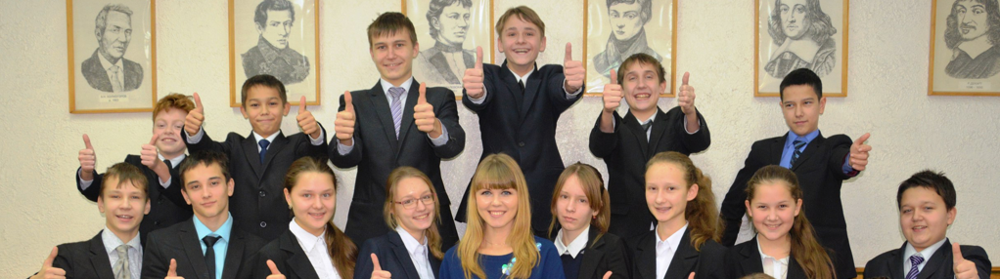
актив класса
Ответственные за питание
Федорова Анна
 Попова Дарья
Попова ДарьяПортфолио класса:
«Проект 8В»
Документ для скачивания: Скачать: https://goo.gl/2VzS9h
важно знать:
«Гимн лицея»
Документ для скачивания: Скачать: http://goo.gl/KoiITd
«кодекс чести лицея»
Документ для скачивания: Скачать: http://goo.gl/zulGiS
наши мероприятия:
15.01.2016
Главный урок Нюрнбергского процесса заключается в напоминании ныне живущим поколениям о страшной трагедии, грозившей всему миру, о подвиге наших соотечественников и других объединенных наций, о значимости решений состоявшихся судов для миллионов судеб человечества. Обвинительные приговоры на этом процессе подтвердили, что террор и агрессия, направленные против мирного населения, никогда не остаются безнаказанными. На уроке памяти учащимися был просмотрен документальный фильм «Нюрнберг. 70 лет спустя».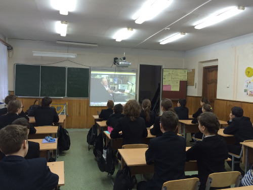
29.12.2015
29.12.2015 в дни зимних каникул учащиеся 7В класса приняли участие в обшелицейском мероприятии — Кинофестиваль 2015, на котором ребята показали свой видеоролик — новогоднее поздравление лицеистам. Дебют нашего класса в данном конкурсе стал удачным, в результате чего мы получили небольшой приз в номинации «Удачный дебют». Обязательно будем участвовать в следующем кинофестивале!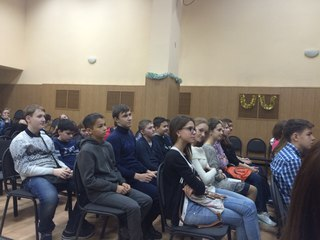
28.12.2015
28.12.2015 учащиеся 7 В класса посетили мероприятие «Новогодняя эволюция» планетария КФУ. В этот день для них была подготовлена увлекательная программа в форме небольшой лекции о моделях, представленных в выставочном зале планетария, затем учащиеся могли наблюдать звездное небо, в конце мероприятия им был продемонстрирован полнокупольный фильм «Черная дыра». Ребята были в восторге от увиденного и делились впечатлениями друг с другом.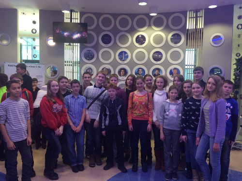
25.12.2015
25 декабря 2015 года в 7В классе был проведен урок Доброты, основная цель которого — формирование толерантного отношения к инвалидам и лицам с ограниченными возможностями здоровья по слуху и зрению. Проведение урока Доброты способствует сформировать у учащихся гуманного отношения и сопереживания к проблемам людей с одновременным нарушением зрения и слуха, а также повысить информированность о проблемах слепоглухих людей в детской аудитории.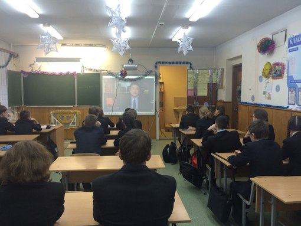
24.12.2015
24.12.2015 учашиеся 7В класса приняли участие в открытии елки в парке «Крылья Советов». Несмотря на плохую погоду в этот день, ребята активно ждали появления Деда мороза и Снегурочки, а также с интересом смотрели подготовленную для них концертную программу в этот вечер!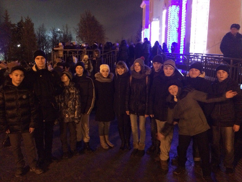
11.12.2015
11.12.2015 прошло очень значимое для нас событие — посвящение в лицеисты. Каждый класс должен был представить свою визитку, а также продемонстрировать свои незаурядные способности в интеллектуальном конкурсе. Наш класс, показав все свои умения, набрал 51 балл. В результате чего занял 1-ое место на данном мероприятии. Мы очень старались и долго к этому шли, в связи с чем радости нашей не было предела!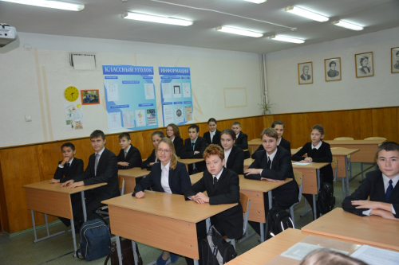
04.12.2015
Классный час был построен так, чтобы привлечь к участию в мероприятии как можно больше детей. По форме это «час памяти», основное содержание которого — сообщения детей о Московской битве. В начале в конце классного часа учитель проводит беседу об исторической памяти и патриотизме.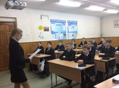
20.11.2015
20.11.2015 в 7В классе классным руководителем и инициативной группой был проведен классный час в форме интерактивного мероприятия «Урок толерантности» с целью формирования и поддержания у учащихся толерантного отношения к людям, а также понимание наличия общечеловеческих ценностей, важных для всех народов, формирование межкультурного интереса, что очень значимо в связи с последними событиями, произошедшими в мире.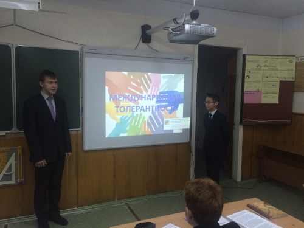
30.10.2015
30.10.2015 в 7В классе классным руководителем и инициативной группой класса был организован и проведен интерактивный урок-игра «День дружбы», в котором каждый из учащихся смог принять активное участие. Данное мероприятие было направлено на определение ценности дружбы, на формирование толерантного обращения друг к другу, а также правильной жизненной позиции ребят.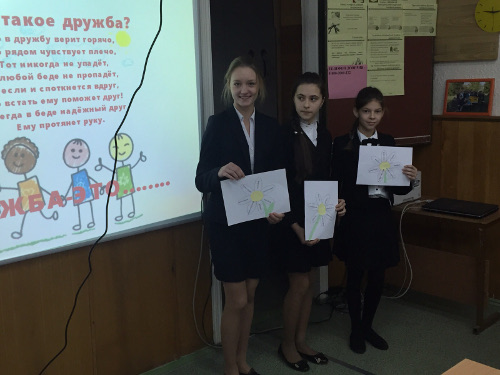
27.09.2015
27.09.2015 от нашего класса в Кроссе наций приняла активное участие семья Игнашина Игоря под номером 116. Они показали в данном мероприятии очень хороший результат, финишировав четвертыми. Поздравляем их!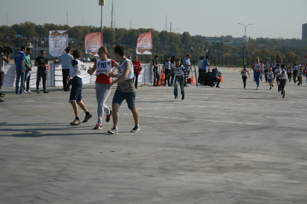
18.09.2015
18.09.2015 в 7В классе был проведен урок «Время доверять» с целью информирования учащихся о телефоне доверия 88002000122. На этом уроке была проведена игра для ребят «Свеча доверия», а также просмотрен видеоролик о возможных проблемах их сверстников и способах их решения. Учащиеся приняли активное участие в обсуждении данной темы.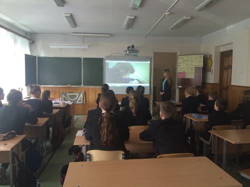
13.09.2015
13 сентября 2015 года в соответствии с запланированным мероприятием «Спортивный Татарстан» была организована учителями физической культуры и проведена Спортивная эстафета среди учащихся 7-ых классов. В команде от каждого 7-го класса в эстафете приняли участие 8 юношей и 5 девушек, остальные учащиеся стали группой поддержки для своих одноклассников.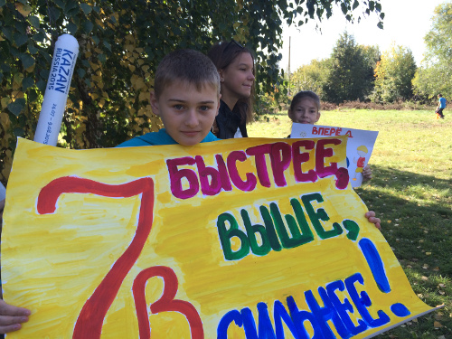
11.09.2015
11 сентября 2015 года в рамках мероприятия «Визит доброты» учащиеся 7 В класса навестили ветеранов, инвалидов, одиноких пожилых людей. Внимание ребят вместе с небольшими подарками получили ветераны Сучкова Пелагея Васильевна, Ильин Евгений Михайлович и Ильина Вера Георгиевна.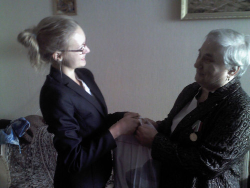
05.09.2015
05.09.2015 учащиеся 7 В класса посетили СК «Триумф». Ребята посмотрели игру в хоккей командами своих сверстников, попытались сдать нормативы по ГТО, а также для них была проведена экскурсия в бассейн этого спортивного комплекса. В завершении экскурсии было снято видеоролик с участием нашего класса на тему «Здоровье нации»!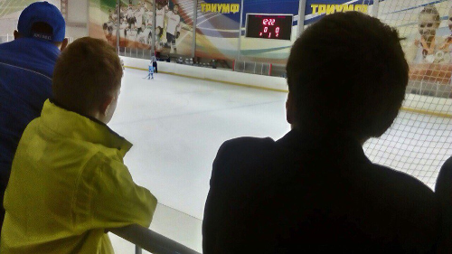
04.09.2015
Классный час «Экстремизму - Нет» «Урок памяти, направленный на развитие у обучающихся толерантности в межнациональных и межконфессиональных отношениях»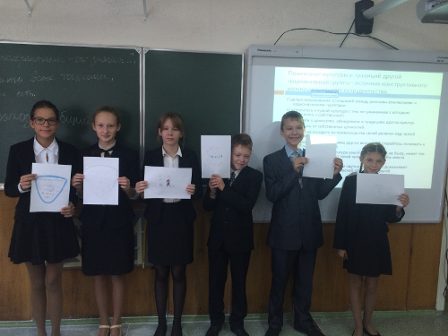
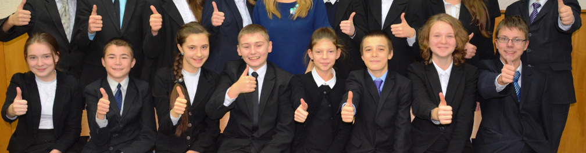